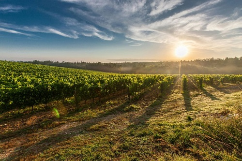
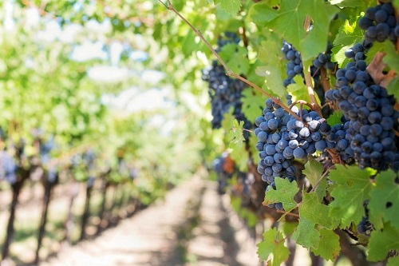
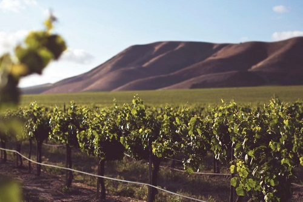

Eastern Peake Winery
Eastern Peake is a small project that evolved from very humble beginnings. Dianne Pym & Norman Latta purchased a property during the late 1970s in the tiny township of Coghills Creek, Western Victoria.The idea was to build a mud brick home and vegetable garden producing the bulk of their food. Aiming for self sufficiency on the land was their dream as they escaped from Melbourne. They successfully built their own home, grew vegetables and had livestock on their beautiful piece of land looking East over the Creswick Valley.
Wombat Forest Wines
Wombat Forest Vineyard and Winery is a surprise package nestled on the edge of the Wombat State Forest and only fifteen minutes from Daylesford. Their cellar door and courtyard have extensive forest views where visitors can enjoy a glass of wine and seasonal platters relaxing on the deck or by a wood fire. Their winery produces handcrafted wines paying particular attention to detail.The Burrow is a modern take of a barn which opens up onto an expansive verandah with a dramatic forest backdrop providing an ideal location for special occasions. Twenty-five years later they are continuing to provide genuine country hospitality.
Dal Zotto Winery
Otto and Elena Dal Zotto established Dal Zotto Estate in North East Victoria's King Valley in 1987. Back then it was a small vineyard planted to chardonnay, merlot and cabernet sauvignon producing a few tonnes of grapes. These days the family vineyard holdings run close to 400 acres. Otto and Elena's sons Michael & Christian now own Dal Zotto and have continued to be inspired by and add to the Dal Zotto vision.